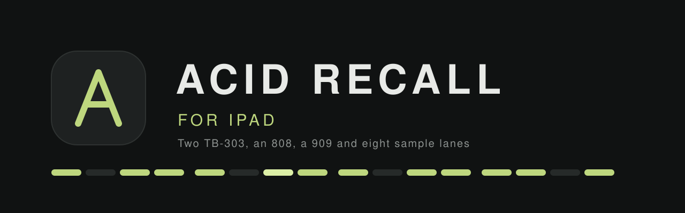

PROTOTYPE
ACID RECALL, on the iPad
The performance fork of OpenRB-338 (two TB-303, a TR-808, a TR-909 and an eight-lane sampler) built as a native iPadOS app, with the same Rust engine.
WHERE IT STANDS
- Sound and screen, in testThe desktop rack, scaled to the iPad, with the full audio engine on Core Audio.
- Touch layoutOne module per screen, swipe between them, a mixer rail always at hand.
- MIDIControllers and MIDI Clock over USB-C, through Core MIDI.
INSTALL ON AN IPAD
- Open the latest successful run of the
ios
workflow and download the
AcidRecall-iPadartifact. It holdsAcidRecall.ipa. - Install it with a sideloading tool such as Sideloadly or AltStore, signed in with your Apple ID. With a free Apple ID the app runs for seven days, then is signed again.
- On the iPad, trust your Apple ID in Settings, General, VPN and Device Management, then turn on Developer Mode in Settings, Privacy and Security.
- Put songs (
.rbs) and samples in Files, On My iPad, ACID RECALL. The app's file browser opens there.